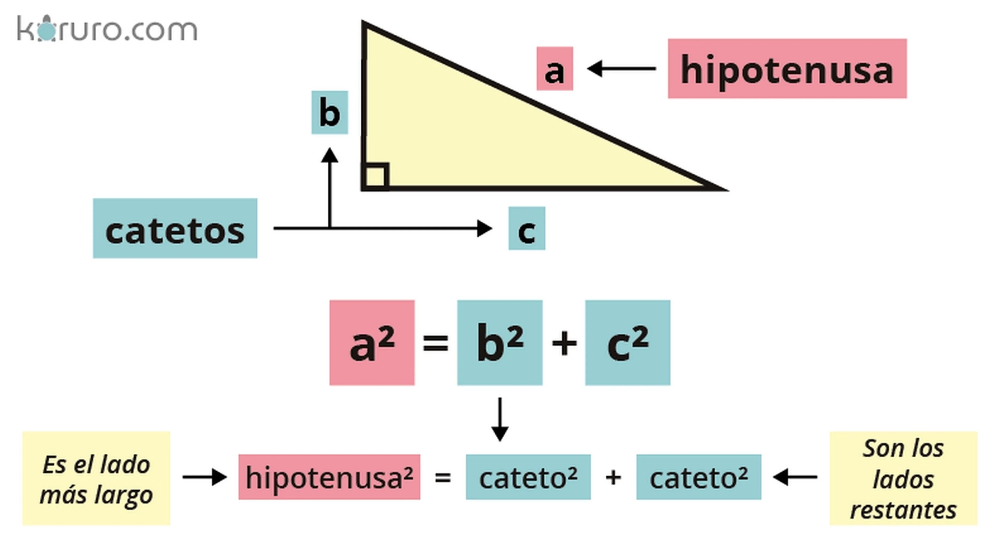
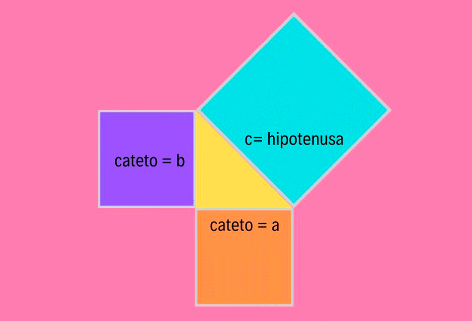

¿Qué es el Teorema de Pitágoras?
El teorema de Pitágoras establece que, en un triángulo rectángulo, el área del cuadrado construido sobre la hipotenusa es igual a la suma de las áreas de los cuadrados construidos sobre los catetos.
- a y b son los catetos
- c es la hipotenusa
a² + b² = c²
Calculadora de Pitágoras
Hipotenusa (c):
Aplicaciones del teorema de Pitágoras
Calculando la hipotenusa
Para calcular la hipotenusa, usamos la fórmula: c = √(a² + b²)
Ejemplo práctico:
Supongamos que tienes un triángulo rectángulo con los catetos de longitud 3 y 4:
1. Catetos: a=3, b=4
2. Elevado al cuadrado: 3²=9 - 4²=16
3.Suma de los cuadrados: 9+16 = 25
4.Raìz cuadrada: c= √25 = 5
Por lo tanto, la longitud de la hipotenusa es 5.
Calculando un cateto
Conociendo la hipotenusa y un cateto, podemos calcular el otro cateto usando: a = √(c² - b²)
Ejemplo práctico
Supongamos que tienes un triángulo rectángulo con la hipotenusa de longitud 5 y uno de los catetos (digamos b) de longitud 4, y deseas encontrar la longitud del otro cateto (a).
1. Hipotenusa: c=5c = 5c=5
2. Cateto conocido: b=4b = 4b=4
3. Eleva la hipotenusa al cuadrado: c²=5²=25
4. Resta el cuadrado del otro cateto: a²=25−4²=25−16=9
5. Calcula la raíz cuadrada: a=√9=3
Por lo tanto, la longitud del cateto aaa es 3.
Clasificando triángulos rectángulos
Un triángulo es rectángulo si cumple con la ecuación: a² + b² = c²
Pequeña historia acerca del Teorema de Pitágoras
Según el proyecto “Derivación de las Matemáticas”, de la Universidad Estadual de Campinas (Unicamp), la evidencia muestra que el filósofo desarrolló y demostró matemáticamente el teorema alrededor del año 500 a.C. Sin embargo, los indios, egipcios y babilonios ya usaban esta característica de los triángulos rectángulos desde hace al menos mil años.
Una de las pruebas, según la iniciativa de la Unicamp, es una tablilla babilónica conocida como Plimpton 322, fechada en 1800 a.C. y conservada en la Universidad de Columbia, en Estados Unidos. Cientos de números alineados de a tres están grabados en el artefacto, y están relacionados de tal manera que el cuadrado de uno de ellos es siempre la suma de los cuadrados de los otros dos (a²=b²+c²). El matemático griego, sin embargo, fue el primero en formular una ley universal para esta relación.
National Geographic